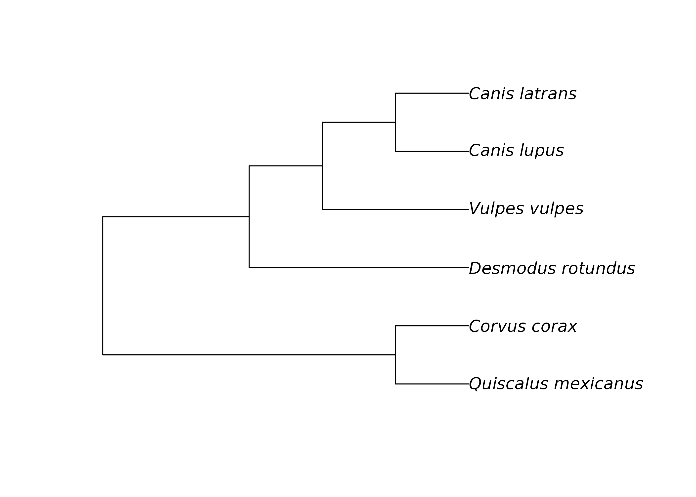

here() starts at /media/luisd/H/sync/Dropbox/darcyDB/PDRF/PCB-R-cursoFilogenias
Filogenias en R
¿árbol filogenético?
. . .
Diagrama que muestra la relación evolutiva/similitud entre especies (o taxones)
Uno de los formatos más utilizados para representar filogenias son el Newick(.tree)
El formato Newick es una notación para representar relaciones evolutivas utilizando paréntesis y comas.
A y B se parecen más entre sí que a X
"((A,B),X);"[1] "((A,B),X);"Para trabajar con esta notación, podemos usar ape (Analysis of Phylogenetics and Evolution):
library(ape)
read.tree(text="((A,B),X);") %>%
plot()El formato Newick es anidado:
Los lobos, coyotes y zorros pertenecen a Canidae; los lobos y coyotes (género Canis) están más estrechamente relacionados
Canidae <-"(Vulpes_vulpes,(Canis_lupus,Canis_latrans));"
read.tree(text=Canidae) %>%
plot()Si agregamos murciélagos, todos pertenecen a los mamíferos:
Mammalia <-"(Desmodus_rotundus,(Vulpes_vulpes,(Canis_lupus,Canis_latrans)));"
read.tree(text=Mammalia) %>%
plot()Si quisieramos agregar cuervos y zanates. ¿Éstos dónde irían?
tetrapoda<-"((Quiscalus_mexicanus,Corvus_corax),(Desmodus_rotundus,(Vulpes_vulpes,(Canis_lupus,Canis_latrans))));"
read.tree(text=tetrapoda) %>%
plot()
Agregando una planta, los mamíferos y las aves se anidan
Eukarya<-"(Sideroxylon_celastrinum,((Quiscalus_mexicanus,Corvus_corax),(Desmodus_rotundus,(Vulpes_vulpes,(Canis_lupus,Canis_latrans)))));"
Nktree<-read.tree(text=Eukarya)
plot(Nktree)Graficando filogenias con ggtree
ggtree nos permite graficar, personalizar, anotar árboles filogenéticos usando la gramática de gráficos
Paquetes necesarios:
library(ape)
library(ggtree)
library(deeptime)
library(tidytree)
library(ggimage)Icteridae
ictree <-read.tree(here("data","Icteridae_tree.txt"))
ictree
Phylogenetic tree with 100 tips and 99 internal nodes.
Tip labels:
Icterus_melanopsis, Icterus_northropi, Icterus_laudabilis, Icterus_dominicensis, Icterus_cayanensis, Icterus_pyrrhopterus, ...
Node labels:
761, 762, 763, 764, 765, 766, ...
Rooted; includes branch lengths.Visualizando el objeto con ape
plot(ictree, show.tip.label=F)Con ggtree
Asignamos la figura al objeto
p1
p1<-ggtree(ictree,color="black",size=0.5)
p1El argumento/función layout cambia la disposición del árbol:
p1+layout_dendrogram()+
p1+layout_fan()+
p1+layout_circular()Scale for y is already present.
Adding another scale for y, which will replace the existing scale.
Scale for y is already present.
Adding another scale for y, which will replace the existing scale.
Scale for y is already present.
Adding another scale for y, which will replace the existing scale.Cambiar el color del fondo:
p1+
theme_tree(bgcolor="lightblue")Agregar las etiquetas de las puntas:
p1+
geom_tiplab(size=1,color="darkblue",angle=10)Formas en cada punta
p1+
geom_tippoint(size=1,color="brown",shape=10)Rotular nodos:
p1+
geom_nodelab(size=1,color="purple")Puntos en cada nodo:
p1+
geom_nodepoint(size=2,color="red",shape=16)A gregar una escala temporal a la filogenia, con el paquete deeptime
py<-revts(p1)
py+coord_geo(xlim=c(-10,-1),abbrv = F,neg=T,skip=NULL,dat="stage",size=1.5)+
theme_tree2()Combinando geoms
p1+
layout_dendrogram()+
theme_tree(bgcolor="#e9f0ea")+
geom_tiplab(size=0.5,color="darkblue",angle=45)+
geom_tippoint(size=1,color="brown",shape=10)+
geom_nodelab(size=1,color="purple")+
geom_nodepoint(size=2,color="red",alpha=0.3,shape=16)Anotaciones
ej: destacar el género Quiscalus
- encontrar el nodo del ancestro en común más reciente
- crear un tibble con la información del árbol
- buscar las especies de Quiscalus:
ictree %>%
as_tibble %>%
filter(grepl("Quiscalus",label))# A tibble: 6 × 4
parent node branch.length label
<int> <int> <dbl> <chr>
1 146 41 1.82 Quiscalus_quiscula
2 148 42 0.851 Quiscalus_niger
3 149 43 0.335 Quiscalus_major
4 149 44 0.335 Quiscalus_mexicanus
5 150 45 1.02 Quiscalus_nicaraguensis
6 150 46 1.02 Quiscalus_lugubris Ancestro común más reciente (MRCA()) de las dos especies en el género con la longitud de rama más larga y más corta
ictree %>%
as_tibble %>%
MRCA(41,43)# A tibble: 1 × 4
parent node branch.length label
<int> <int> <dbl> <chr>
1 144 146 1.37 806 . . .
ictree %>%
as_tibble %>%
MRCA("Quiscalus_quiscula","Quiscalus_mexicanus")# A tibble: 1 × 4
parent node branch.length label
<int> <int> <dbl> <chr>
1 144 146 1.37 806 Anotar el género Quiscalus en la filogenia utilizando geom_cladelab (nodo 146)
p1+
geom_cladelab(node=146,label = "Quiscalus",offset=0,
barcolor="red",textcolor="brown",
angle=-90, offset.text=0.1,hjust=0.5)Destacar el géneroIcterus:
ictree %>%
as_tibble %>%
filter(grepl("Icterus",label))# A tibble: 31 × 4
parent node branch.length label
<int> <int> <dbl> <chr>
1 111 1 0.193 Icterus_melanopsis
2 111 2 0.193 Icterus_northropi
3 114 3 1.47 Icterus_laudabilis
4 114 4 1.47 Icterus_dominicensis
5 116 5 0.197 Icterus_cayanensis
6 116 6 0.197 Icterus_pyrrhopterus
7 115 7 0.943 Icterus_auricapillus
8 117 8 1.49 Icterus_bonana
9 117 9 1.49 Icterus_portoricensis
10 118 10 2.24 Icterus_prosthemelas
# ℹ 21 more rowsictree %>%
as_tibble %>%
MRCA(25,14)# A tibble: 1 × 4
parent node branch.length label
<int> <int> <dbl> <chr>
1 103 104 2.92 764 p1+xlim(0,11)+
geom_cladelab(node=104,label="Icterus",geom="label",
fill="yellow",textcolor="red", barcolor="gray",angle=90,size=19)geom_strip() para dibujar líneas entre dos puntas arbitrarias
p1+xlim(0,15)+
geom_strip("Quiscalus_quiscula","Icterus_icterus",
label=" un clado polifilético", barsize = 2, offset.text = 0.2,size=15)geom_highlight para destacar clados sobre las mismas ramas:
p1+
geom_highlight(node=146,alpha=0.5,fill="purple",type = "rect")highlight + rótulo
p1+
geom_highlight(node=146,alpha=0.5,fill="purple",type = "rect")+
geom_cladelab(node=146,label = "Quiscalus",offset=0,barcolor="#9418f2",textcolor="#4c0980", offset.text=0)+
xlim(0,11.5)Enriquecer figuras con imágenes
siluetas desde phylopic o imagenes propias.
Es necesario cargar
rsvgprimero
library("rsvg")Linking to librsvg 2.48.9Requisitos
- tabla con nodos, especies o clados a anotar, y el identificador de los mismos en Phylopic (phylopic_id)
Quiscalus y Agelaius tienen imagenes indexadas en phylopic
Encontrar los identificadores con phylopic_uid()
ids<-phylopic_uid(c("Quiscalus","Agelaius"))
ids name uid
Quiscalus Quiscalus 2ada4e2f-35ab-48d2-b32e-3bad57033dd4
Agelaius Agelaius 2a48d7c6-5e9d-4d71-9291-ff4c68643cdfTabla con los datos necesarios para anotar nuestra filogenia:
dt<-data.frame(node=c(146,136),image=ids$uid,genus=c("Quiscalus","Agelaius"))
dt node image genus
1 146 2ada4e2f-35ab-48d2-b32e-3bad57033dd4 Quiscalus
2 136 2a48d7c6-5e9d-4d71-9291-ff4c68643cdf Agelaiusp1+ geom_cladelab(data = dt,
mapping = aes(node = node, label = genus,
image = image, color = genus),
geom = "phylopic", offset = 0, offset.text=0.5)Cambiando los colores de las figuras siguiendo gramática de gráficos:
p1+ geom_cladelab(data = dt,
mapping = aes(node = node, label = genus,
image = image, color = genus),
geom = "phylopic", offset = 0, offset.text=0.5)+ scale_color_manual(values=c("#f75419","purple"))Más geoms
pr<-p1+ geom_cladelab(data = dt,
mapping = aes(node = node, label = genus,
image = image, color = genus),
geom = "phylopic", offset = 0, offset.text=0.5)+
scale_color_manual(values=c("#f75419","purple"))+
geom_highlight(node=146,alpha=0.5,fill="purple",type = "rect")+
geom_highlight(node=136,alpha=0.5,fill="#f75419",type = "rect")
prEjemplo con múltiples anotaciones por Axel Arango:
Graficando atributos de las especies en la filogenia.
Cargar los atributos, en este caso Hand Wing Index (HWI) y el hábito migratorio:
hwi<-read.csv(here("data","hwi_icteridae.csv"),header=T)
head(hwi) X HWI
1 Icterus_melanopsis 26.51912
2 Icterus_northropi 21.02135
3 Icterus_laudabilis 22.22500
4 Icterus_dominicensis 26.52877
5 Icterus_cayanensis 26.26213
6 Icterus_pyrrhopterus 17.75463migrants<-read.csv(here("data","icterimigrants.csv"),header=T)
head(migrants) sp migratory
1 Agelaioides_badius No-migrant
2 Agelaius_assimilis No-migrant
3 Agelaius_humeralis No-migrant
4 Agelaius_phoeniceus Migrant
5 Agelaius_tricolor No-migrant
6 Agelaius_xanthomus No-migrantUnienr con la filogenia (es importante que las especies estén rotuladas como label)
names(hwi)<-c("label","hwi")
names(migrants)<-c("label","migratory")
hwimigrants<-hwi%>%
left_join(migrants,by="label")
datatree<-full_join(ictree,hwimigrants,by="label")
datatree'treedata' S4 object'.
...@ phylo:
Phylogenetic tree with 100 tips and 99 internal nodes.
Tip labels:
Icterus_melanopsis, Icterus_northropi, Icterus_laudabilis,
Icterus_dominicensis, Icterus_cayanensis, Icterus_pyrrhopterus, ...
Node labels:
761, 762, 763, 764, 765, 766, ...
Rooted; includes branch lengths.
with the following features available:
'', 'hwi', 'migratory'.
# The associated data tibble abstraction: 199 × 5
# The 'node', 'label' and 'isTip' are from the phylo tree.
node label isTip hwi migratory
<int> <chr> <lgl> <dbl> <chr>
1 1 Icterus_melanopsis TRUE 26.5 No-migrant
2 2 Icterus_northropi TRUE 21.0 No-migrant
3 3 Icterus_laudabilis TRUE 22.2 No-migrant
4 4 Icterus_dominicensis TRUE 26.5 No-migrant
5 5 Icterus_cayanensis TRUE 26.3 No-migrant
6 6 Icterus_pyrrhopterus TRUE 17.8 No-migrant
7 7 Icterus_auricapillus TRUE 17.3 No-migrant
8 8 Icterus_bonana TRUE 16.9 No-migrant
9 9 Icterus_portoricensis TRUE 22.3 No-migrant
10 10 Icterus_prosthemelas TRUE 24.1 No-migrant
# ℹ 189 more rowsFilogenia con atributos
- Valores continuos del HWI sobre las puntas del árbol en una escala de colores:
p5<-ggtree(datatree)
p5+
geom_tippoint(aes(color=hwi))podemos también personalizar esta escala:
p5+
geom_tippoint(aes(color=hwi),shape=15)+
scale_colour_gradient(low='blue', high='red',breaks= c(15,20,25,30,35))Datos binarios
p5+
geom_tippoint(aes(color=migratory),shape=15)+
scale_colour_manual(values = c("green","orange"))Combinando atributos
px<- py%<+% migrants + geom_tippoint(aes(color=migratory),shape=15)+
scale_color_manual(values = c("#961d29","#1420a3"))+
scale_fill_manual(values = c("#961d29","#1420a3"))
px+ geom_facet(panel="HWI",data = hwi,geom=geom_col,mapping=aes(x=hwi,color=migratory,fill=migratory),orientation='y')+
theme_tree2()